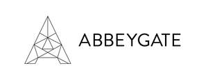

Trade Mark Journal No.2025/024 13 June 2025
UK00004209643 27 May 2025 (16,18)
Mark 1
Mark 2

- Class 16
- Albums; Almanacs; Blotters; Bookbinding materials; Bookmarks; Bookmarkers; Cards; Calendars; Calendar refills; Cardboard; Catalogues; Charcoal pencils; Checkbook holders; Clipboards; Covers [stationery]; Craft paper; Desk calendars; Desk mats; Diaries; Document files; Document holders [stationery]; File cases; Folders; Gift boxes; Greeting cards; Journals; Ledgers [books]; Money clips; Note books; Note paper; Note pads; Origami folding paper; Packing [cushioning, stuffing] materials of paper or cardboard; Padding materials of paper or cardboard; Pads of paper; Pads [stationery]; Paper; Paper sheets [stationery]; Passport cases; Passport covers; Passport holders; Pen cases; Pencil cases; Pencil holders; Pencils; Pen clips; pen holders; Pens; Pen sets; Planners; Pocket calendars; Printed calendars; Printed geographical maps; printed matter; Protective covers for books; Scrapbooks; Stationery; stationery and office requisites, except furniture; Stationery boxes; Stationery cases; Stationery folders; Steel pens; Wall calendars; Wrapping materials made of paper; Writing cases [sets].
- Class 18
- Animal skins and hides; Bags; Bags [envelopes, pouches] of leather, for packaging; Baggage tags; Briefcases; Carrying cases for documents; Cases for business cards; Conference folders; Cosmetic bags; Credit card cases; Credit card holders; Credit card wallets; Document cases; Hand bags; Key cases; Labels for luggage; Leather and imitations of leather; Leather bags and wallets; Leather boxes; Leather cases; Luggage, bags, wallets and other carriers; luggage and carrying bags; Luggage tags; Moleskin [imitation of leather]; Pocket wallets; Purses; Travel bags; Travelling sets [leatherware]; Toiletry bags; Wallets; Wash bags; .
Marketing Services Ltd
Representative: Grid Law Solicitors